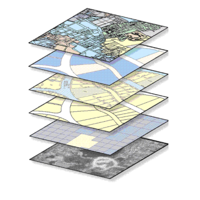
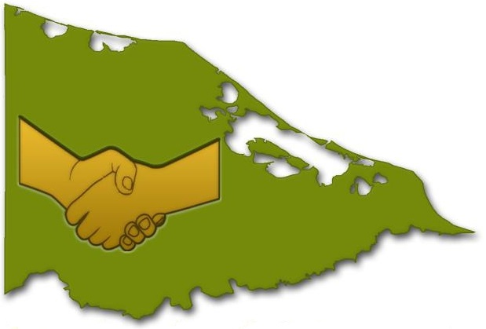
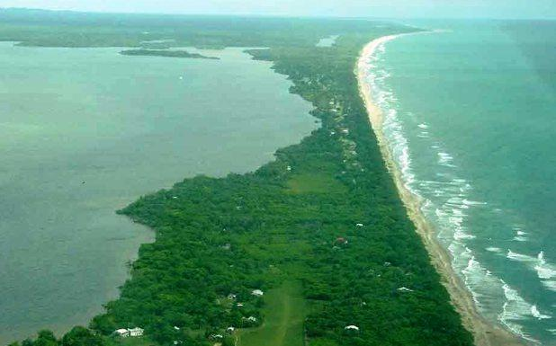

Toggle navigation
Home
People
Affiliated Organizations
Honduran Moskitia Case Study
Darién Case Study
Welcome to the Centroamérica Indígena Project!

METADATOS
View details »
The University of Kansas
View details »
The American Geographical Society
View details »

MASTA
View details »
FITH
View details »
Minerva Initiative
View details »
Investigaciones Aplicadas

Concejo Territorial de Katainasta